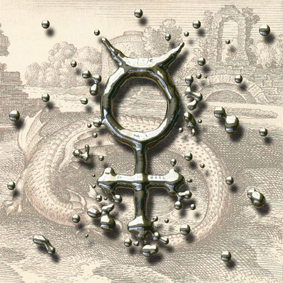

|  |
Discovered by : Known to ancient civilizations
Origin : The element is named after the planet Mercury and the symbol comes from the Latin ‘hydragyrum’, meaning liquid silver.
Description :
Mercury has fascinated people for millennia as a heavy liquid metal that can be extracted easily by heating cinnabar, a red ore (mercury sulfide). Mercury is known to be dangerous in all its forms, and use is now confined to industry where it is employed in the manufacture of chlorine and sodium hydroxide, although even here it is being phased out. Some is still used to treat seed corn to make it resistant to fungus disease, and in street lighting, dental amalgam and electrical apparatus. Older uses - in thermometers, in felt production and as a de-worming powder - have all been superseded. Mercury is widespread in the environment - every mouthful of food we eat contains a little. Our daily intake is about 0.01 milligram (about 0.3g in a lifetime), and this we can cope with easily. However, one form of mercury - methylmercury - is particularly dangerous; it can be formed by micro-organisms in polluted waters, absorbed by fish and so eaten by people.
|